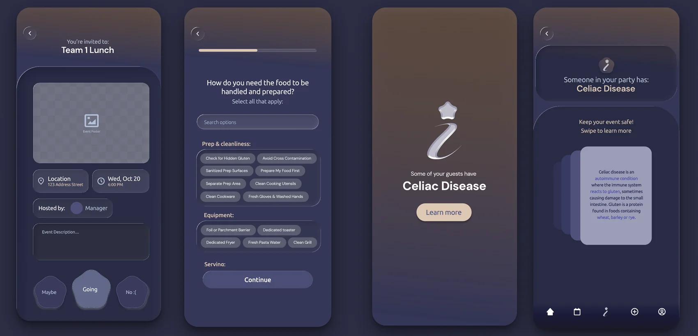

I led a team of four with Soha Mehta, Michael Kim and Carrie Shi, from September 9 to November 11, 2026, working in FigJam and Figma.

How can we help people with celiac disease feel less anxious and join social meals with more confidence, by giving them control over how their dietary needs are handled?
What we needed to learn
Eating safely with celiac disease takes work before the meal starts, and the social cost is as heavy as the physical risk. To understand both sides, we spoke with people who live with it, and with allergists and dieticians who treat patients of all ages.
13
interviews in total
10
people with celiac disease
3
doctors and dieticians
Vetting falls on the person with celiac
They question waiters, read every label, plan trips ahead, and rarely trust anyone else’s kitchen.
The cost is social, not just physical
Eating differently from peers feels lonely, and people read celiac as a preference or a bid for attention.
“There’s definitely a lot of stress and anxiety every single time I go to a new restaurant.”
P1, living with celiac disease
“Everybody is concerned about gluten contamination, everybody.”
P3, celiac disease specialist
Synthesizing the research
[one or two lines on how you got from 13 interviews to one persona: affinity mapping, clustering, what you argued about]
Livia
mid-20s, lives in Missouri, newly employed, diagnosed at 14
How might we make it easy for friends to do the quiet prep work, like sending a menu ahead, without her having to ask?
Livia has just started her first corporate job. Her manager invites her to a team lunch where senior leaders will be, a hard event to miss and a real chance to make a first impression.
But she can’t order whatever is on the menu. She has little time to research the restaurant, isn’t sure its gluten-free options are truly safe, and doesn’t want to draw attention to her needs in front of new colleagues.
Food safety: how can she be sure her needs are heard and her food is prepared to them?
Social pressure: can she say what she needs without being singled out?
Livia’s journey map: hover to zoom, click to open it full size
The concept
We compared three concepts and chose “What’s Not Good,” which became invetty. It scored highest, and the scores lined up with what we heard in research.
Like When’s Good, but for food: each guest gets a link and marks the foods, ingredients and preparation methods that don’t work for them, including cross-contamination, shared utensils and cooking surfaces. The host gets a filtered list that works for everyone. Answers are anonymous, so nobody has to speak up in front of the group.
Less anxiety
Needs are shared privately, before the event happens.
More confidence
The host plans a meal that works for everyone from the start.
Better bonding
Everyone shares the meal; nobody sits it out.
Wireframing and user testing
We started with grey wireframes and tested them with real people. After each round, the screens changed for a reason. Hover or tap the screens to hear it.
Going became the obvious button
In testing, people got distracted by other buttons instead of tapping Going. They needed clear signs of what’s interactive and what to do next.
So we colorized the wireframe and gave Maybe, Going and No clear shapes, with Going the biggest. Now it’s the obvious tap.
From a flat list to grouped choices
In testing, most people scrolled past the allergy options instead of reading them, and the list wasn’t specific enough about prep for celiac.
So we grouped the chips into prep and cleanliness, equipment and serving, added search, and fit in more options.
A menu people could find their way with
In testing, people couldn’t reach their profile or the rest of the app, and tapped around at random.
So the three-icon bar became a five-icon menu, and Create event moved to the top of the screen.
Final design
Set in Ubuntu and DM Sans.
invitee flow
inviter flow
What I learned
We assumed the host side would be intuitive because anyone can host. It wasn’t, and we only found out by watching people use it.
The most important information has to be impossible to miss. The first tester skipped the celiac alert, so we redesigned it.
Clear structure beats a long flat list. Grouping the questionnaire made the choices easier to take in.
What I’d do next
Test with a larger, more varied group, so the flow holds up for people outside our circle.
Support dietary restrictions beyond celiac disease.